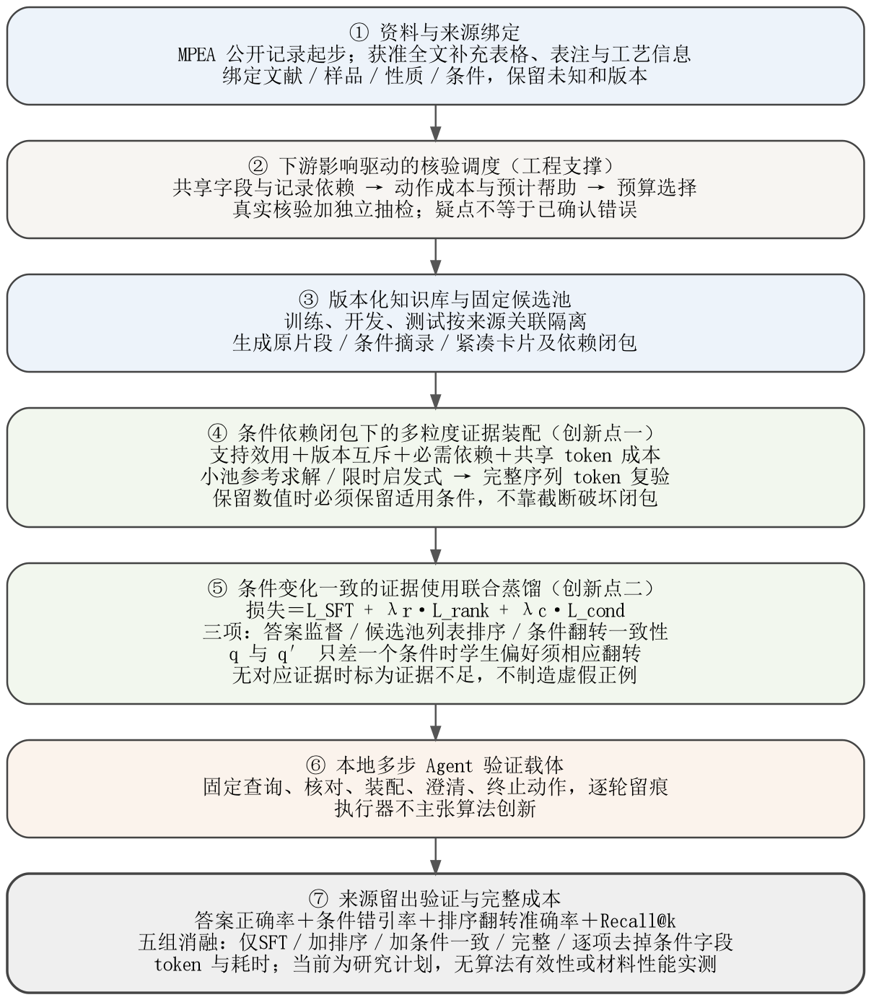

面向材料文献问答的
条件可比 RAG 与小模型蒸馏方法研究
目标是提升本地小模型使用材料文献的答案正确率。两项拟方法分别处理上下文怎样装配和抽取疑点先核验什么：用条件依赖约束保护测量依据，用预算调度处理影响范围较大的疑点，再由任务蒸馏的小模型组织回答。
本文说明拟实施的方法、参数来源与验证方式。公开CSV的静态计数已经核查；装配器、核验调度器及其效果尚未实现或验证，不把旧方法的数值检查转为本版成果。
数值有出处，仍可能失去适用条件
材料性能数值、单位、测试温度、工艺与来源可能分别出现在表格、表注和正文。检索命中不保证这些信息最终都进入小模型；压缩只留下数值和材料名称时，回答可能使用真实数字，却错配了测量条件。
例如，用户询问25 ℃铸态材料的拉伸屈服强度。一条记录温度相符但工艺不同，另一条工艺相符但温度不同，两条记录不能拼成一条同时满足要求的观测。回答比较两个温度时，则可以分别引用两条完整测量记录。
本版不假定“温差小就能互换”。 精确点值查询不用区间长度作分母；近似匹配须有明确允许和核验依据，仍保留实际观测条件。粗工艺标签不强制排成统一工序距离。跨记录差异只生成核验疑点，不能自动证明原文或抽取有错。
条件依赖闭包下的多粒度证据装配
不是把检索结果直接按分数截断，而是联合决定保留哪些记录、每条记录保留到什么粒度，以及必须一同保留的条件与来源。依赖闭包指解释一条记录所需的直接与间接依赖都被保留，例如单位来自表头、温度来自表注时，不能只留下数值行。
支持效用：先在同一记录内检查联合条件
u_iℓj = h_iℓj · s_φ(q, j, iℓ) （1）i是测量记录，ℓ是原片段、条件摘录或紧凑卡片等版本，j是问题要求回答的事实。h是直接支持的硬准入标记；已知冲突、关键条件未知或来源无法对应时不能当作该事实的直接依据。s是冻结规则或训练评分器给出的支持效用，不是材料真实性概率，不能用最终测试答案计算。
联合选择目标与约束
max F(x) = Σ_j w_j max({u_iℓj : x_iℓ = 1} ∪ {0}) （2）
Σ_ℓ x_iℓ ≤ 1 （3a）
x_iℓ ≤ z_a，a ∈ D_iℓ （3b）
Σ_iℓ c_iℓ x_iℓ + Σ_a d_a z_a ≤ B （4）| 符号 | 工程含义 |
|---|---|
| x_iℓ | 是否选择记录i的版本ℓ；每条记录最多选一个版本。 |
| D_iℓ、z_a | 版本必须携带的依赖集合，以及某依赖块是否进入上下文。依赖作用范围必须能回溯到文献、表格、样品和性质。 |
| c_iℓ、d_a | 版本本体与额外依赖的token成本，二者不重复计费；确有相同作用范围的共享表注只计一次。 |
| B、w_j | 证据预算及固定需求权重。系统提示、问题和输出空间先预留，不能挤占后再截掉条件。 |
目标对同一事实取已选版本中的最大支持，避免重复片段反复计功。版本互斥、依赖闭包与共享成本共同决定可行解，差异在这些决策的耦合，而非首次使用覆盖或背包公式。
工程求解
小候选池用整数规划或穷举作参考；部署以“边际效用／新增闭包成本”构造候选，再作有限版本替换和记录交换。最终完整序列用真实分词器复算，超预算时重新选择合法版本，不能直接从尾部裁掉条件。评分、搜索、修复与预处理成本均入账。
固定非负效用下的覆盖目标有成熟性质，但新可行域包含版本互斥和共享成本，不直接承诺普通贪心的1−1/e保证。限时求解需报告可行解、上界或缺口；目标分高不等于答案正确。
下游影响驱动的核验调度
一处共享表头的单位抽错可能影响多行记录，一次核验它与逐条查看的代价不同。调度对象由单条记录改为查看表头、表注、工艺段落等核验动作，按影响关系和预计收益分配有限核验时间。
max G(A) = Σ_i v_i p_i max({r_ai : a ∈ A} ∪ {0}) （5）
Σ_(a∈A) t_a ≤ H （6）p_i是经标注校准的错误概率估计，v_i是冻结工作负载下的影响权重，r_ai是动作a对确认或处理记录i疑点的预计帮助，t_a是正的动作真实时间，H是总核验时间扣除预留独立抽检后的调度预算。最大帮助用于避免对同一疑点重复计收益；存在必需组合的动作，先作为带完整成本的复合动作处理。
结构影响范围可以从依赖关系计算，错误概率、动作帮助与时间则需要先导核验和计时。模型自报置信度不能直接当真值；疑点数不能冒充真错检出数；最终测试答案和查询错误不能反向参与优先级设置。
队列以边际预计收益与成本比构造并有限交换；核验后更新未决疑点。预算中预留独立抽检，覆盖自动通过和低优先级记录，按抽样概率估计误放行。只核验调度器挑中的样本，会产生选择偏差，不能据此估计全库错误率。
这是一项拟实现的维护算法。当前没有真实PDF核验耗时、动作收益或人工节省比例；这些必须先导取得。原文不可用时，只报告结构化场景的结果，不把模拟疑点当真实抽取错误。
条件变化一致的证据使用联合蒸馏
小模型学习需求解析、记录引用、缺口说明和答案组织，不替规则猜测缺失字段，也不把相近记录改写成目标条件实测。教师只用训练资料示范，事实依据来自经核验记录；示范包含简短操作和限制，而非不可访问的内部推理。
L_SFT(θ) = −Σ_(q,E,y) Σ_t log π_θ(y_t | q,E,y_<t) （7）E是带依赖引用的完整证据包，y包括答案、使用记录与适用范围。但只训练答案不够：学生学到的是「引用某条记录」，而非「判断哪条记录适用于当前条件」。材料问答的失效多属后者，因此在此之上增加两个联合项。
L = L_SFT + λr · L_rank + λc · L_cond （8）排序项在固定候选池上做列表排序，要求学生把适配当前条件的记录排在前面：
L_rank = − log( exp(s(q,d⁺)/τ) / Σ_(d∈D(q)) exp(s(q,d)/τ) ) （9）条件一致项由两个方向组成，是本项的核心。设问题 q 与 q′ 只差一个条件（如温度由 25℃ 变为 800℃），d⁺ 与 d′⁺ 分别是两个问题下的正确记录，则要求两种偏好同时成立：
L_cond = max(0, m − s(q,d⁺) + s(q,d′⁺)) + max(0, m − s(q′,d′⁺) + s(q′,d⁺)) （10）第一项要求学生把 q 的正确记录排在 q′ 的正确记录之前，第二项要求反向。两项同时成立，才意味着学生的偏好随条件改变而翻转，而不是固定偏好某一条记录。这正是单靠答案监督学不到的行为。
① 只有候选池同时含匹配与不匹配记录时才构造偏好翻转；② 新条件下无对应证据时，标签为证据不足，不制造虚假正例；③ 温差接近不等于性能可互换，不据此标注任何训练真值；④ 若两个问题本可由同一记录支持，不强制翻转。
须在开题阶段固定的实现细节：重排评分 s 是实现为独立 LoRA 重排头，还是生成模型内部的结构化排序输出；候选池是否固定（固定保证可比，动态更近部署）；负例从同成分其他条件记录取还是全局随机取；τ、m、λr、λc 在开发集冻结而非测试集调优；排序损失与答案损失的样本与 token 预算配比。上述各项若不固定，目标函数只停留在纸面。
消融五组：仅答案 SFT；答案 SFT 加普通排序蒸馏；答案 SFT 加条件一致损失；完整目标；逐项去掉温度、工艺、试验类型之一。第五组用于判断哪类条件最难学，为条件字段的取舍提供依据。
- 资料与来源绑定公开结构化记录起步；获准原文补充表头、表注和样品条件，未知状态保留。
- 核验调度与独立抽检定义共享字段动作与影响关系，按预算核验并抽检，形成版本化知识库。
- 检索与多粒度候选固定召回池，为记录生成经核验的版本与依赖闭包。
- 预算装配与token复验联合选版本和条件块，共享仅限已确认作用范围，最终核对真实长度。
- 条件变化一致蒸馏答案监督＋候选池排序＋条件翻转一致性；q 与 q′ 只差一个条件时学生偏好须翻转。
- 多步Agent载体固定查询、核对、装配、澄清、终止动作，逐轮留痕；执行器不主张算法创新。
- 来源留出验证主指标为单轮答案正确率；补充报告核验成本和多步完成度。评价用于验证方法。

单轮可以检验回答与证据使用；多步用于检验补充条件后的重查和状态一致性。Agent不另算算法创新，不擅自修改用户目标、工艺或容许范围；后台人工维护不偷偷算作免费的在线推理。
已核查的静态记录与待验证的全文资料
| 数据范围 | 已核实计数或状态 | 使用边界 |
|---|---|---|
| MPEA全资料 | 1545条／630成分／265 DOI | 来源和字段的静态计数，不是完整原文。 |
| YS或HV＋温度＋工艺 | 1205条 | 性质为有限数、温度有限且工艺非空；性质类型分开。 |
| 再要求试验类型 | 1062条 | 字段齐全不等于完整实验条件；T/C不自动代表硬度测量方式。 |
| 全文材料语料 | 用户提供约两万篇的背景 | 位于其他机器，覆盖、授权与抽取成功率尚未核验，不推算记录产量或GPU天数。 |
| 人工核验资料 | 尚待构造 | 校准参数、动作收益与真实时间需从先导取得。 |
MPEA可先验证记录卡与同字段装配。真实共享表注、抽取错误和人工节时必须有获准原文支撑。人为字段删除只作受控实验，不能冒充真实抽取噪声；不同记录改写不能增加独立来源。
温差接近配对不再称为已确认误弃证据；同成分与粗条件下数值不同只触发核查。原始公式系数可以是相对比例，不能因不和为100判错。热处理与完整测量方法缺失时保持未知，不补造条件。
先按来源关联组划分训练、开发和测试，再生成版本、示范及问法。所有派生内容跟随基础记录；支持评分和调度参数只用训练与开发资料，不能偷用测试答案或测试后人工修正。
计算收益须落实到问答与实际成本
| 对象 | 关键对照 | 量化指标 |
|---|---|---|
| 装配方法 | top-k、同字段文本拼接、固定完整条件卡、字段保护压缩、预算覆盖／多选择背包 | 答案正确率、条件依赖保留、错引、实际token、装配与总耗时 |
| 装配消融 | 固定单粒度、不共享依赖、去闭包、同候选局部贪心 | 分离版本选择、成本摊销、保护和求解的贡献 |
| 核验调度 | 随机动作、逐条不确定性、只看影响、小批全核验参考 | 同等真实时间内确认与处理的真错、自动通过区误放行及区间 |
| 模型与系统 | 底座、普通SFT、经核验示范SFT；固定另一组件作交叉对照 | 条件敏感问答、可回答题误拒、多步完成度、教师差距与成本 |
所有装配基线取得相同字段和来源，不故意让对照看不到条件。事实正确性与标注完整性分开计分；自动检查仅覆盖可核验字段，原文语义主张另需可靠参考或人工裁定。比较教师时也共享证据和工具，不能直接称为性能上界。
同题受控增减干扰时，记录正确证据是否被预算挤出。错误区分检索、装配与生成使用；Oracle设置只说明特定干预下的差异，不自动等于互不重叠的因果贡献。按来源组分析不确定性，不能将大量同记录改写当独立样本。
优化目标F或G上升不代表真实回答更正确、也不代表人工更省。若实际质量或成本没有相对强基线的增量，应如实收紧结论，而不是用结构完整或界面运行代替验证。
沿用成熟框架，界定具体计算改动
现有文献说明该方向已有研究基础。本课题不寻找无人涉及的冷门方向，也不宣称覆盖、背包、压缩或主动核验的思想首创。拟改动是测量记录的条件依赖、多粒度版本和共享成本，以及字段级核验动作的下游作用范围。
- LLMLingua：预算控制和提示压缩的成熟基础。对照时保留同样必要条件，检验联合装配的额外收益。
- Self-Correcting RAG：多维多选择背包式上下文选择。本文引用可访问arXiv版本，不虚构正式发表信息。
- VITAL-RAG：代码对象多视图与预算分配的近邻，本题按测量记录与其条件依赖作任务化改造。
- Attribution–Compression Frontier：压缩后出处支持可能分离的研究，自动判分局限不能忽略。
- ConfBench与ActiveDP：置信度复核预算及弱监督的相关基础，本题不将核验调度说成首次主动学习。
正式报告保留与新主线相关的40项文献，逐条官方元数据及核验方式保存于配套JSON。arXiv版本引用不等于断定不存在正式版；OpenReview投稿页不等于会议录用。元数据核对也不等于全文实验复现。
两项方法、一个可运行载体
预期形成证据装配器、条件变化一致蒸馏方法、下游影响驱动的核验调度器（工程支撑）与本地多步 Agent 原型。时间按启动后八个月安排：前两个月固定数据契约与候选池；第三至五个月完成装配主实验与蒸馏训练；第六至七个月做消融与来源留出验证；第八个月整理与撰写。个人信息留空，时间采用相对月份。
资源不足时先完成结构化记录上的装配主实验和获准原文范围的核验先导，减少额外模型与全文扩量。不能把尚无原文、标注、计时的第二项收益写成已经取得的工程成果。
现有内容是研究计划。尚未实现优化模块、训练本课题模型、全量处理全文库或验证材料性能；个人与单位信息留空，由研究者按真实情况补充。评价用于证明方法，不另设评测类课题。